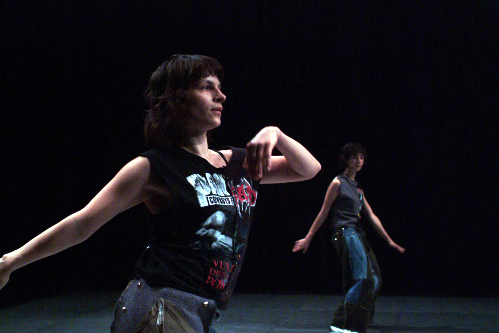

J'aime collaboration with Anne Juren2004 
photo Wolfgang Kirchner J'aime explores the joy inherent in dancing, being observed while dancing, and observing dance. This high-energy dance performance to techno music by DJ Assault of Detroit, creates an experience of shared sensuality. Juren and Chauchat move easily and precisely, transforming boisterous dance into a choreography governed by passionate discipline. Their performance not only results in a model discotheque created live on stage, but also composes a neatly structured tale of and about movement, music and the strong female element therein.Choreography and dance: Alice Chauchat, Anne Juren; Music: DJ Assault; Light: Bruno Pocheron; Stage: Roland Rauschmeier; Costumes: Alexander Wolff; Production: Wiener Tanz- und Kunstbewegung; Co-production: Tanzquartier Wien; Co-realisation: Tanzfabrik Berlin; With the support of the regional cultural direction of Île-de-France – French Ministery of Culture and Communication, Centre National de la Danse (Paris), Maison du Théâtre et de la Danse (Épinay-sur-Seine), ImPulsTanz (Vienna), Choreographic Platform Austria (Salzburg), TanzWerkstatt Berlin watch the video
|